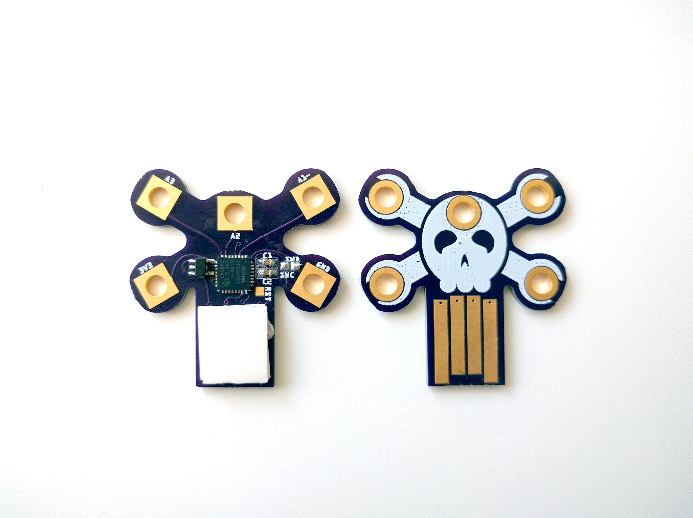

Jolly Wrencher Done¶
Published on 2018-08-12 in Skull.
The PCBs arrived from @oshpark (thank you again for all the help!) and the Jolly Wrencher USB key is assembled:
As the previous board, it just runs CircuitPython, with some tiny USB mass storage for the scripts, and a serial console with the Python REPL. I imagine it could be useful for testing various sensors and displays and such — the pins I have broken out support I2C and SPI, they also all have ADC and one even has a DAC. One pin is also internally connected to the copper pour, to detect touches. But there are 20 unused GPIO pins there, and I wonder if I should add some blinky LEDs or something in there… but then the board would look much busier. I’m torn between simplicity and optimization.